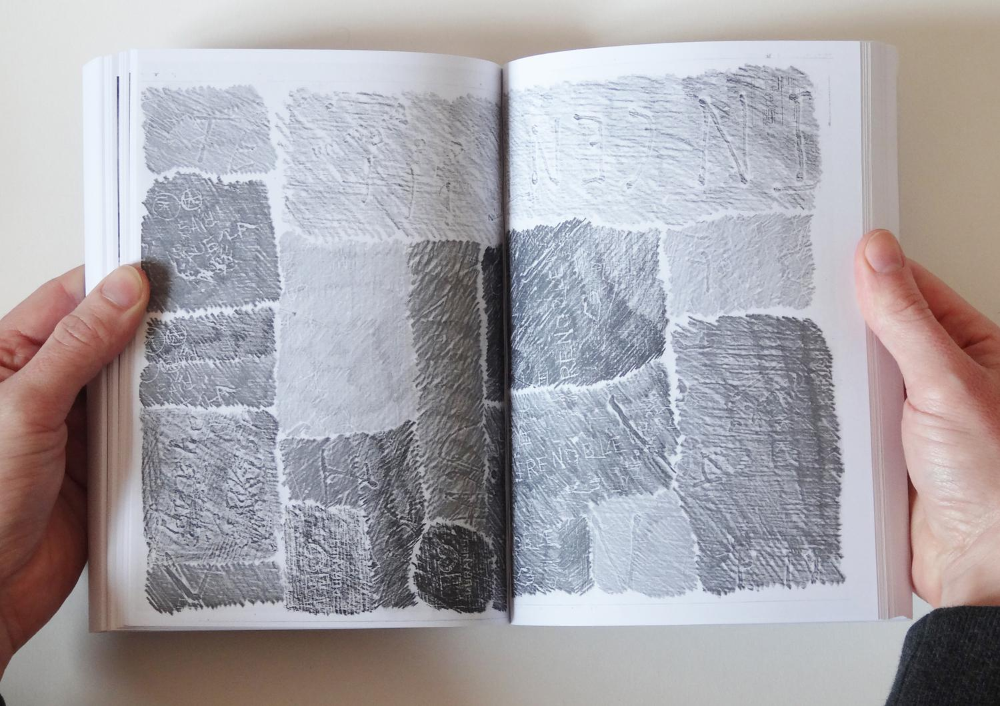
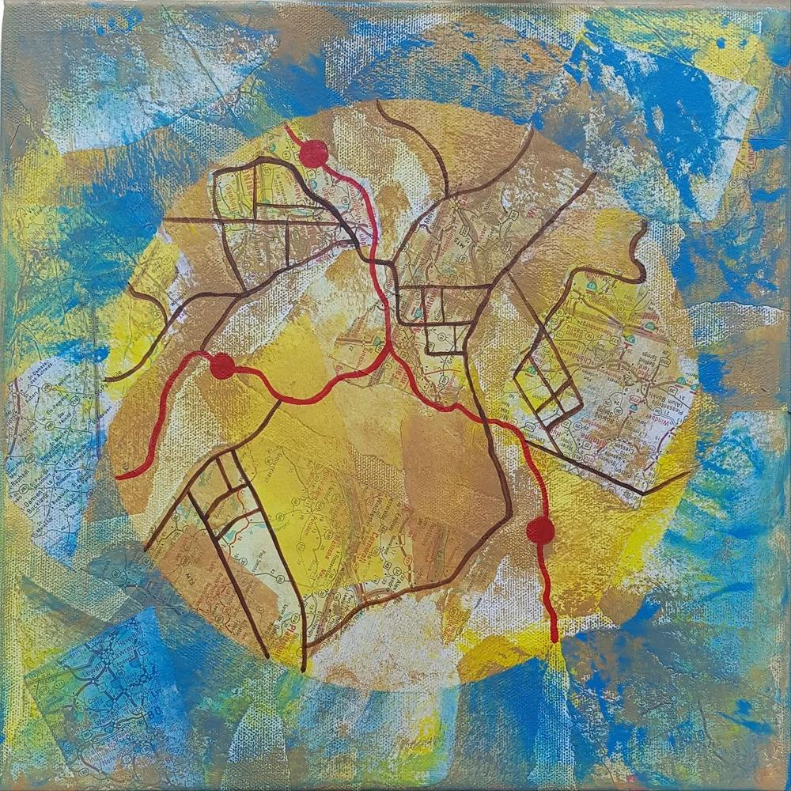
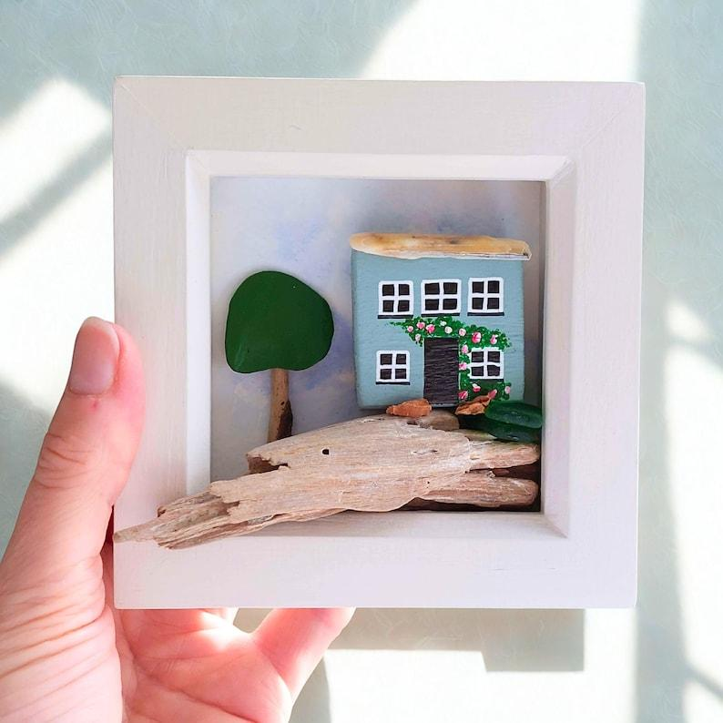
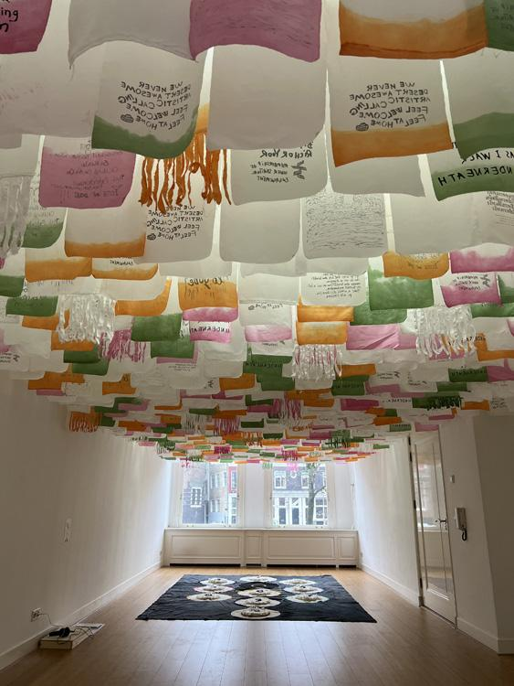

Когда дом остался где-то далеко
Можно переехать туда, куда давно мечтал, и неожиданно скучать по самым обыкновенным вещам: знакомой дороге, голосам, языку, на котором не нужно подбирать слова. Иногда переезд — наш выбор, иногда необходимость. И даже если вокруг красиво, внутри может оставаться чувство чужого пространства. Можно радоваться новому и одновременно грустить о прежнем. Не нужно выбирать между этими чувствами. Принадлежность складывается постепенно: из маленьких узнаваний, новых привычек, встреч и мест, где становится немного спокойнее. Прежняя жизнь не обязана исчезнуть, чтобы новая могла начаться.
Материалы и практики
Фактура памяти
Фроттаж: отпечатки знакомых ощущений

Воспоминания о доме живут не только в фотографиях. Иногда их возвращают фактуры — дерево, ткань, камень, поверхность стола. Попробуй создать собственную коллекцию отпечатков.
Открыть инструкцию и вопросы
Как попробовать
- Возьми несколько листов бумаги и простой или цветной карандаш. Найди безопасные рельефные поверхности: ткань, листья, дерево, монету, фактурную обложку.
- Положи бумагу на поверхность и мягко проведи боковой стороной карандаша, чтобы проявился рисунок. Это техника фроттажа.
- Вспомни фактуры прежнего дома. Какие из них можно найти здесь? Какие вызывают тепло, грусть, спокойствие или удивление?
- Собери отпечатки в небольшой альбом или композицию. Добавь слова, цвета или рисунки, если захочется.
Вопросы для размышления
- Какая фактура неожиданно напомнила о прежней жизни?
- Что из этого опыта я могу бережно сохранить?
- Какие ощущения уже появляются в новом месте?
Моя карта принадлежности
Личная картография

Необязательно сразу чувствовать себя своим в новом городе. На этой карте можно обозначить места, с которыми уже появляется связь, и оставить пространство для неизвестного.
Открыть инструкцию и вопросы
Как попробовать
- Возьми лист бумаги, краски, карандаши или вырезки. Настоящая географическая точность не нужна.
- Отметь на карте места, где ты уже бываешь: дом, дорогу, магазин, дерево, берег, остановку, кафе.
- Добавь цвета или символы чувств: где спокойно, где любопытно, где пока тревожно или одиноко.
- Соедини места линиями своих маршрутов. Оставь пустые участки там, где пока ничего не знаешь. Можно вернуться к карте через неделю или месяц.
Вопросы для размышления
- Где я уже чувствую себя немного увереннее?
- Какое место я хотел(а) бы узнать ближе?
- Что на моей карте пока имеет право оставаться пустым?
Дом, который я создаю
Миниатюрная объёмная композиция

Дом не обязательно изображать как здание. Это может быть маленькая сцена, уголок природы, свет, предметы или абстрактная форма — всё, что связано с ощущением «мне здесь можно быть собой».
Открыть инструкцию и вопросы
Как попробовать
- Подготовь небольшую коробочку, рамку или картонную основу. Собери бумагу, веточки, камешки, ткань, пластилин или другие доступные материалы.
- Представь пространство, где тебе хотелось бы находиться. Что там обязательно есть? Чего там точно нет?
- Создай миниатюрную композицию. Можно сделать домик, как на фотографии, но повторять образец не нужно.
- Посмотри на результат. Если хочется, добавь одну деталь, которая связывает это пространство с твоей жизнью сейчас.
Вопросы для размышления
- Что делает это пространство моим?
- Что я могу привнести в свою повседневность уже сейчас?
- Какое чувство мне хочется здесь сохранить?
Здесь есть место и для меня
Дополнительная практика: флажки со словами

Небольшие флажки могут стать видимым напоминанием о том, что у человека есть право занимать место, говорить своим голосом и постепенно обживать новое пространство.
Открыть инструкцию и вопросы
Как попробовать
- Вырежи несколько прямоугольников из бумаги или используй лоскутки ткани.
- На каждом напиши или нарисуй то, что тебе важно в новом месте: слово, чувство, маленькое открытие, право, желание.
- Закрепи флажки на нитке прищепками или узелками. Можно сделать совсем короткую гирлянду.
- Найди для неё место, где приятно её видеть. По желанию дополняй новыми флажками, когда появятся новые узнавания.
Вопросы для размышления
- Какое слово мне особенно важно сейчас?
- Что уже стало частью моей жизни здесь?
- Как я могу дать себе больше места без спешки?
Интерактивная заметка
Здесь можно записать свои мысли. Нажми «Скачать заметку», чтобы сохранить её только на своём устройстве. Записи не отправляются на сайт.
Индивидуальная поддержка
На индивидуальной встрече можно исследовать переживания в собственном темпе, без необходимости приходить с готовыми ответами. Поддержка строится вокруг твоей ситуации и потребностей.
Познакомиться со специалистами →Группы и встречи
«Место, где я есть» — концепция поддерживающей арт-терапевтической группы. Через творчество, работу с материалами и разговор участники могут исследовать свой опыт. Даты и условия участия пока не определены.
Подробнее о группах →В завершение
Дом — это не всегда место, в которое мы возвращаемся. Иногда это пространство, которое мы постепенно создаём вокруг себя.